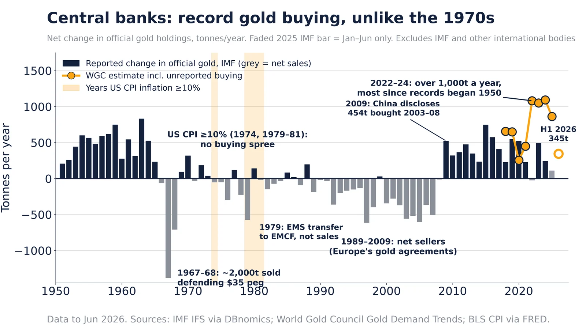

Q6. International

Both indexes indexed to their peaks. The Nikkei 225 fell to about 18% of its 1989 peak and did not regain it until Feb 2024, over 34 years. The Nasdaq lost about 78% and recovered in Apr 2015. Two cases only: they show what a bubble deflation can look like, not that one is due.
Sources: FRED NIKKEI225: Nikkei Inc. Nikkei 225 FRED NASDAQCOM: Nasdaq Composite

IMF World Economic Outlook general government gross debt, % of GDP (latest year in FRED shown in legend). China's ratio has more than doubled since the mid-2010s on the IMF measure, which excludes much local-government financing-vehicle debt.
Sources: FRED GGGDTAJPA188N: IMF WEO Japan FRED GGGDTAITA188N: IMF WEO Italy FRED GGGDTACNA188N: IMF WEO China

BIS total credit to the private non-financial sector (households and companies). China reached 201% of GDP in Oct 2025, up from 107% in 2008. Japan's ratio peaked at 214% in Oct 1993 before its lost decades; the BIS has long flagged rapid credit build-ups as a crisis warning.
Sources: FRED QCNPAM770A: BIS China FRED QJPPAM770A: BIS Japan FRED QUSPAM770A: BIS US FRED QXMPAM770A: BIS euro area BIS credit statistics

Rubles per dollar, monthly average (OECD): 84.8 in Sep 2026, peak monthly average 110.2 in Mar 2022. The 1998, 2014 and 2022 ruble collapses each followed a combination of oil weakness, sanctions or default.

WTI crude $107.89 on Oct 20, 2026; Fed broad dollar index 121.4 on Oct 16, 2026. Oil spikes have preceded several US recessions (1973, 1979, 1990, 2008) — four episodes, not a law.
Sources: FRED DCOILWTICO: EIA WTI spot FRED DTWEXBGS: Fed broad dollar index

Long-term US government bond yield from Shiller's data. Major troughs around 1899, 1941 and 2020; one great peak in 1981 (15.3%). In 150 years that is roughly two to two-and-a-half long (Kondratieff-length) cycles — fewer than the more-than-3 repetitions Michael Hentschel requires before treating a long-wave pattern as evidence.
Sources: Robert Shiller, Yale online data

Monthly 10-year government bond yields (OECD via FRED), latest Sep 2026 (Italy Aug). Japan's 3.05% is the highest since 1996; the UK's 5.24% and the US 4.99% are the highest since mid-2007; France since 2008 and Germany since 2009. The IMF's Oct 13 blog says the G7 average 10-year yield is the highest in nearly two decades and warns of the fiscal stakes. Cycle count: since 1990 the US 10-year has made three major cyclical peaks (late 1994, early 2000, mid-2007); two were followed by a US recession within about 1-2 years (2001, 2008-09) and one by a soft landing (1995). Three cycles with a 2-of-3 hit rate is right at Michael Hentschel's threshold, so read it as a warning, not a prediction.
Sources: FRED IRLTLT01USM156N (and DE, FR, IT, JP, GB, CA) IMF blog, Oct 13, 2026

China new-car sales, millions: petrol peaked 2017; EVs lead since 2025. IEA to 2025, CPCA Jan–Sep 2026.
Data
- 2017 (Data): petrol and diesel car sales peaked at 23.6M (IEA).
- 2025 (Data): petrol and diesel cars fell to 11.8M, half the peak; NEVs outsold them.
- Jan–Sep 2026 (Data): petrol and diesel retail 5.6M, down 31% year on year (CPCA).
- Full-year 2026 (Projection/Speculation): about 7.5M if the Jan–Sep pace holds, roughly −68% vs 2017.
Doubt: China's NEV count includes plug-in hybrids (PHEVs), which still burn petrol, so 'petrol is dying' overstates the shift.
Sources: IEA Global EV Outlook 2026 via Our World in Data CPCA Sep 2026 retail via CnEVPost

Central-bank net gold purchases, tonnes per year, 1950–H1 2026. Sources: IMF IFS, World Gold Council.
Data
- 2022–2024 (Data): over 1,000t a year by WGC estimates (2022: 1,082t; 2024: 1,092t), the most since records began in 1950.
- H1 2026 (Data): 345t bought (WGC).
- 1974 and 1979–81 (Data): US inflation hit 10%+ but central banks did not go on a gold buying spree.
- 1989–2008 (Data): central banks were net sellers in most years.
Doubt on the viral version: Rand Group's 'line went vertical, then double-digit inflation' chart tracks the gold price or reserve value, not tonnes bought. Purchases did not surge in the 1970s.
Rebuttal: Original post: Rand Group, Oct 27, 2026
Sources: IMF IFS official gold holdings via DBnomics World Gold Council Gold Demand Trends FRED CPIAUCNS (US CPI)

Germany 2025: 292 GW installed (2.5x 2002), but generation 510 TWh, −14% vs 2021. Energy-Charts, AGEB.
Data
- 2002 → 2025 (Data): installed capacity rose from 116 GW to 292 GW, mostly solar and wind.
- 2017 (Data): gross generation peaked at 654 TWh.
- 2025 (Data): generation 510 TWh, −14% vs 2021 and −22% vs 2017; renewables 58% of output.
- Apr 2023 (Data): Germany closed its last nuclear plants; nuclear capacity is now zero.
Caveat: solar and wind run far fewer hours than coal or nuclear, so rising capacity with falling output is partly by design. Lower demand and imports also cut generation.
Sources: Fraunhofer ISE Energy-Charts, installed power AG Energiebilanzen, gross generation, Sep 2026

Germany fertility 1.32 in 2025, lowest since 1996; replacement is 2.1. Sources: Destatis, World Bank.
Data
- 1964 (Data): 2.54, the baby-boom peak.
- 1994 (Data): 1.24, the post-reunification low.
- 2021 (Data): 1.58.
- 2025 (Data): 1.32, the fourth straight fall and the lowest since 1996.
Sources: Destatis, total fertility rate (Stand Jul 2026) World Bank SP.DYN.TFRT.IN, Germany
Rand Group claim. IMF data put the dollar at 56.7% of allocated reserves.
Claim checked against Data
- Oct 2026 (Claim): Rand Group said the dollar is down to about 40% of world reserves.
- Sep 30, 2026 (Data): IMF COFER puts the dollar at 56.7% of allocated FX reserves.
Doubt: the 40% figure does not match IMF data, and we could not find the original post or its source.
Rebuttal: IMF data brief, Sep 30, 2026
Sources: IMF data brief, Sep 30, 2026
Interpretation: a trader's chart call, Oct 23, 2026. Not data; no TVV rebuild.
Interpretation
- Oct 23, 2026 (Interpretation): Rand Group wrote that a silver breakdown 'would trigger a further freefall'.
Doubt: this is technical analysis of one price chart, with no supporting supply or demand data. Treat it as opinion.
Rebuttal: Silver Institute: World Silver Survey (supply and demand data)